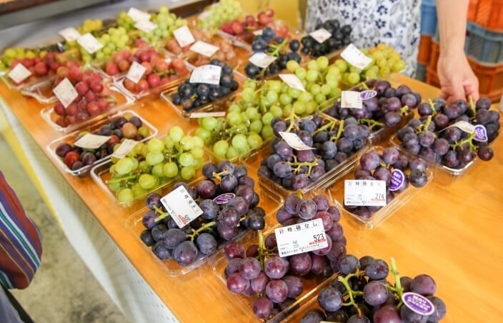
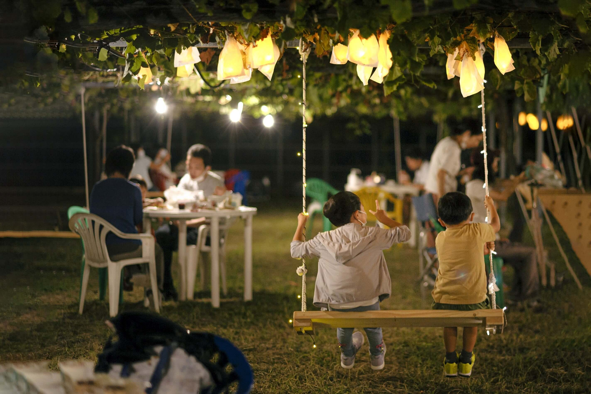
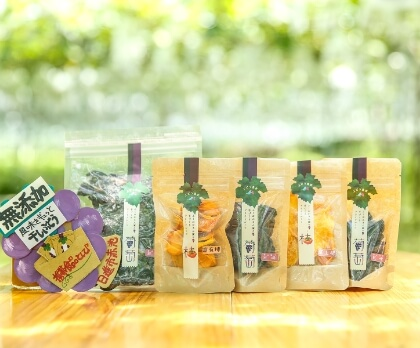

ぶどう直売を開始しています

直売所のぶどう販売は、例年8月上旬から、なくなり次第終了です。開始日は天候で変わるため、7月下旬にInstagramなどで発表します。人気品種の収穫開始も、そこでお知らせしています。
詳しく見る
直売所のぶどう販売は、例年8月上旬から、なくなり次第終了です。開始日は天候で変わるため、7月下旬にInstagramなどで発表します。人気品種の収穫開始も、そこでお知らせしています。
詳しく見る
夜のぶどう畑を舞台にした主催イベントです。令和4年10月7日・8日にも開催しました。開催年やチケット案内は、NEWSとオンラインショップのイベントカテゴリでご確認ください。
詳しく見る
12月の最初の週末は、干し柿、ドライフルーツ、手づくりジャムなどを販売するため直売所を開けます。来られない方は、オンラインショップでも加工品をお選びいただけます。
詳しく見る2024年10月19日（土）9時30分から開催しました。オンラインショップ上ではSOLD OUTとなっていました。次回募集は、イベントカテゴリとこのNEWSに掲載します。
詳しく見る